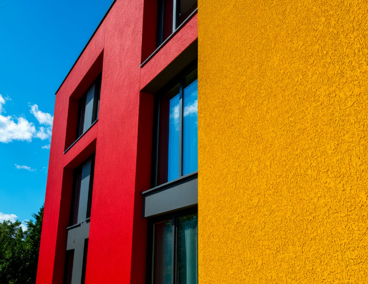

Фасады · Dekoral
Как правильно красить фасад в условиях жаркого климата Узбекистана
21 августа 2026 · MCHJ «OPTIMUS CA»
Сильное солнце, пыль и перепады температур — типичные условия для фасадов в Ташкенте и регионах. Фасадные краски Dekoral рассчитаны на такой климат, но результат зависит от подготовки и режима нанесения.
1. Температура и время суток
Не красьте фасад в пик жары (обычно 12:00–16:00). Оптимально — утро или вечер, когда поверхность не раскалена. Слишком быстрое высыхание ведёт к пятнам и слабому сцеплению.
- Рабочая температура основания — по рекомендации техкарты Dekoral (как правило, без перегрева на солнце)
- Избегайте нанесения перед ожидаемым резким похолоданием ночью
- Защищайте свежий слой от прямого палящего солнца при необходимости сеткой/навесом
2. Подготовка минерального основания
Штукатурка и бетон должны быть сухими, прочными и обеспыленными. Осыпающиеся зоны укрепите глубокопроникающей грунтовкой — иначе финиш «отойдёт» вместе со слабым слоем.
3. УФ-стойкость и цвет
Для южных фасадов выбирайте системы с заявленной стойкостью к выгоранию. Насыщенные тёмные тона сильнее нагреваются — учитывайте это при подборе цвета и числе слоёв.
4. Расход на больших площадях
Экономичный расход — одно из преимуществ Dekoral на ЖК и коммерческих объектах. Предварительный литраж удобно посчитать в калькуляторе на сайте, а точный объём уточнит менеджер под ваше основание.
Подобрать фасадную систему Dekoral?
Рассчитайте расход или оставьте заявку — MCHJ «OPTIMUS CA» подберёт покрытие под климат и основание.